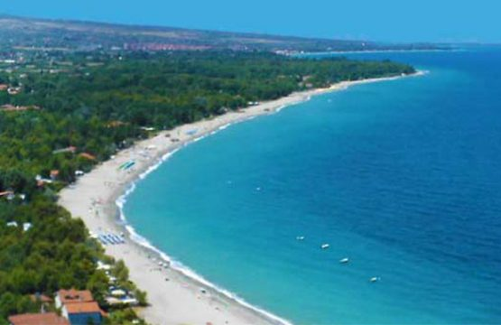
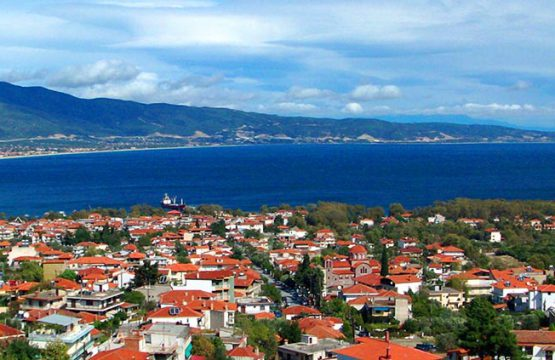
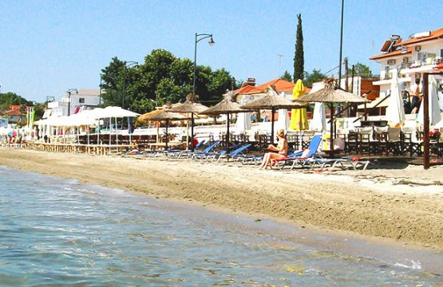
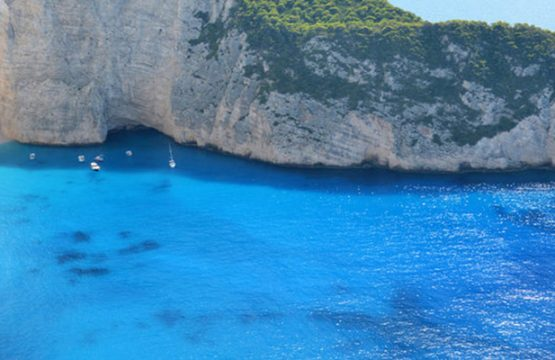
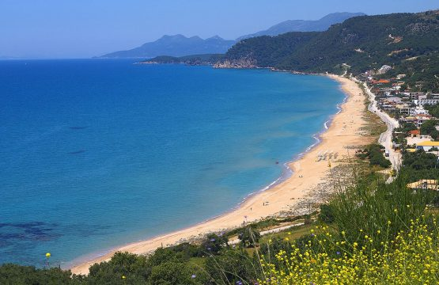
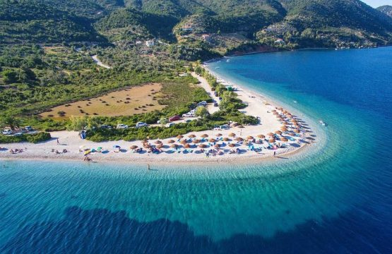

PIERIA
Prefektura Pieria koja leži u senci Olimpa, je jedno od najpopularnijih regija za letovanje. Ekskurzije do istorijskih spomenika, živopisne grčke noći sa etno muzikom, uzbudljiv ribolov, sportovi na vodi, degustacija morskih plodova i odmor na čistim i dobro opremljenim plažama, sa tako širokim izborom zabave Vam jednostavno garantuju fantastično leto u Grčkoj. Naša ponuda je širokog spektra i u nju spadaju apartmani, vile, hoteli i sve to po najpovoljnijim cenama.
stavros
Živopisni gradić Stavros se nalazi u blizini Soluna, u zalivu Strimonikos. Kristalno čisto more, predivne peščane plaže nagrađene „Plavom zastavicom“ koju dodeljuje Evropska unija, duž obale velika šuma, prelepi park platana koji i u najvrelijim danima pruža prijatnu hladovinu, očuvana priroda i obilje zelenila, kao i povoljna vasnpansionska potrošnja neodoljivo mame i stvaraju utisak da ćete doziveti još jedno leto iz snova i to baš ovoga leta - u Stavrosu. Rezervišite među prvima letovanje u Stavrosu i iskoristite first minut ponudu. Za ljubitelje mirnijeg porodičnog odmora, letovalište nudi brojne sadržaje od lepih šetališta, brojnih taverni, kafića i restorana do brojnih parkića, luna park-a, i drugih zanimljivosti za najmlađe. Blizina Atosa i Svete Gore, Soluna, Kavale, Waterland-a, blizina arheoloških lokaliteta i istorijskih znamenitosti (drevna Stagira, rodno mesto grčkog filozofa Aristotela, Amfipolis i dr.) i obližnjih letovališta, upotpunjuje turističku ponudu Stavrosa, pa je tako ovo mesto odličan izbor za one koji hoće... Više informacija
MAKRIGIALOS
Ako tražite jeftino mesto za odmor sa decom, preporučujemo Vam da ovo leto obratite pažnju na Makrigialos. Ovo ribarsko naselje koje se nalazi u blizini Paralije, seoskog je tipa, širokih ulica i lepih kuća. Plaža je peščana, uža, a more toplo sa postepenom dubinom. Ležaljke i suncobrane dobijate kao i u drugim mestima uz piće u baru, ali postoji i prostor za one koji imaju sopstvene rekvizite. Duž plaže je uređeno šetalište a na suprotnoj strani se nižu restorani i taverne. Sam centar mesta je odvojen od plaže i nalazi se u gornjem delu grada. Tu se nalazi veliki trg, lokalna crkva, radnjice, pekara , apoteka, piljare ... Jedan dan u nedelji u blizini trga se otvara i velika pijaca gde možete pronaći sve od namirnica a i druge potrepštine , pa čak i garderobu. Ukoliko volite šetnju trebali biste da odete do susedne uvale, do famozne plaže Bora Bora. Plaža je...
ZAKINTOS
Grčka ostrva su pravi izbor za Vašu letnju avanturu. Možda je ovo pravo vreme da posetite jedno od njih i to neverovatno ostrvo Zakintos koje liči na oživljenu ilustraciju iz bajke o mornarima i njihovim morskih pustolovinama. Ovde Vas čekaju šetnje po stenovitim uvalama i peščanim plažama, muzejima i starim manastirima. Možete da posetite jednoj od najpopularnijih plaža Zakintosa, Navagio (Shipwreck Beach), poznatu po olupini nasukanog broda Panajotis. Pored lepog prirodnog okruženja, ostrvo Zakintos ima bogatu kulturu, koja se razvijala pod uticajem Mlečana. Oni su ostrvo nazvali ’’Fioro di Levante’’ (’’Cvet Istoka’’), a taj naziv se zardžao i do danas. Za bujnu i gustu vegetaciju ostrva zaslužna je mediteranska klima, koju karakteriše visok nivo padavina zimi i mnogo sunčanih sati leti. Najvažniji proizvodi koji se uzgajaju na ostrvu su masline, vinogradi i citrusi. Drugi najvažniji izvor prihoda za stanovništvo je turizam. Ostrvo je poznato po svojoj tradicionalnoj muzici i specifičnoj...
VRAHOS
Ako ste se uputili na Jonsku obalu Grčke, upoznajte najnoviju destinaciju, koja je poslednjih par godina opčinila naše turiste. U piitanju je mesto Vrachos, locirano na pola puta izmedju Parge i Preveze tačnije na 35 km udaljenosti od ovih mesta i na oko 60-ak km od Lefkade. Vrachos leži na jednoj od možda najlepših obala. Plaža duga preko 3 km, širine i preko 50m, prekrivena zlatnim peskom, oduševljava posetioce. More je kristalno čisto, iskričavo plavetnilo. Duž plaže je šetalište, gde možete posetiti neke od odličnih ribljih restorana, taverni,kafića i barova. Deo plaže je pokriven beach barovima u kojima uz piće dobijate suncobrane i ležaljke ali veliki deo plaže je namenjen onima koji koriste sopstvene rekvizite. Vrachos je idealan za miran odmor, duge šetnje bez gužve i larme. U mestu postoji nekoliko prodavnica gde se možete snabdeti osnovnim namirnicama ali za svaki veći shoping morali biste da odete do susednih pomenutih...
ALONISSOS
Alonissos ostrvo je deo kompleksa Sporadi, veoma autentično ostrvo poznato po svojoj neverovatnoj prirodnoj lepoti i nestvarnim plažama. Chora je najslikovitije selo na ostrvu Alonissos, nalazi se na vrhu brda i nudi sjajan pogled na Egejsko more. Ovo selo je ozbiljno oštećeno zemljotresom 1965. godine i tada se većina stanovnika preselila u Patitiri, luku Alonissos. Patitiri, Votsi, Roussoum Gialos i Steni Vala su najčešće turističke tačke na ostrvu, idealne za porodice i romantične parove. Plaže su kristalno-plave i okružene bujnim zelenilom, stvarajući opuštajuću atmosferu.